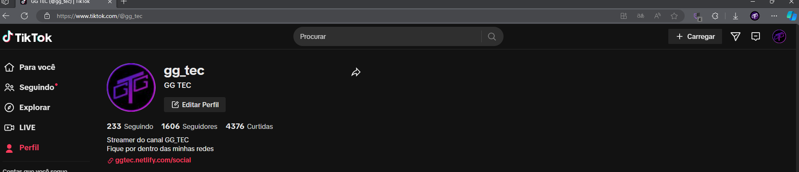
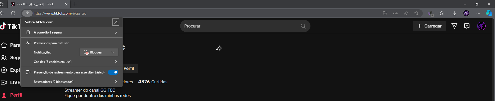
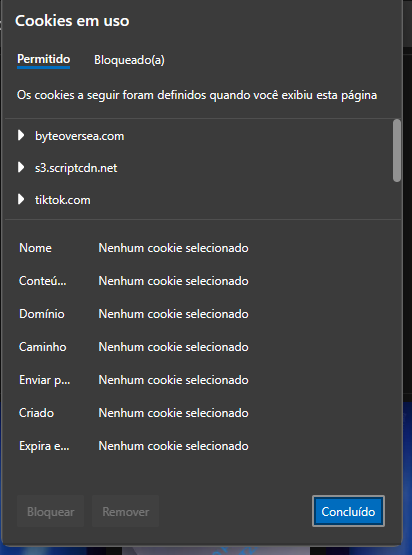
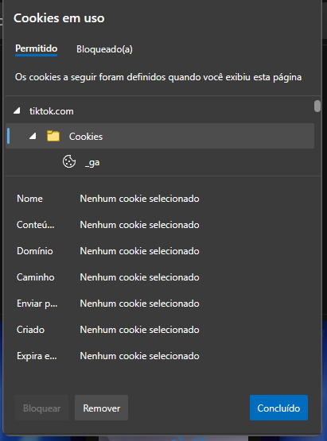
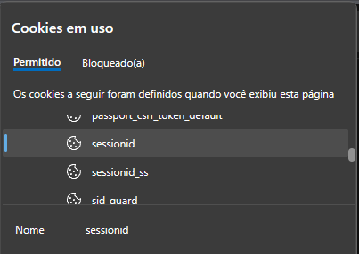
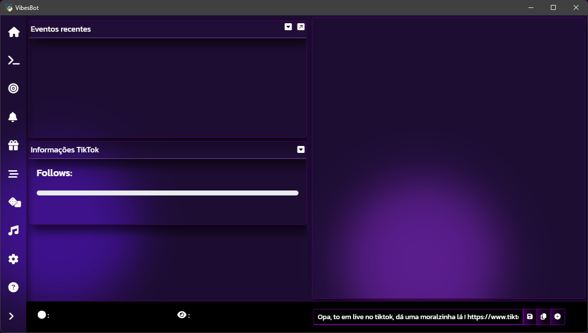

VibesBot Wiki
Siga o guia de configuração abaixo para configurar todas as funções do programa corretamente.
Este é um projeto recém-lançado, por isso ainda não existe um certificado digital, o que acarreta na falsa informação de virus, para solucionar este problema é necessário uma licença de R$ 300/Ano no plano basico, da qual não tenho como pagar atualmentem, porém com o crescimento do projeto estarei providenciando o certificado digital.
Instruções de Download;
- Acesse o seu painel de usuário (Dashboad);
- Efetue a compra da licença;
- Apos a compra o seu painel para download do instalador estará disponivel;
- Clique na aba superior "Download";
- Baixe o arquivo ".exe" clicando em gerar link de download;
- Execute o .exe e instale o programa;
Ativação do programa
Quando for solicitado insira a sua licença que foi fornecia no site antes do download do VibesBot
Atenção !
Sua licença é única e intransferível, sendo restrita à execução exclusiva no computador onde foi ativada. Qualquer tentativa de utilização em outro dispositivo, incluindo aqueles compatíveis com o sistema operacional Windows 11, resultará no encerramento da permissão de uso da licença.
Autenticação de Conta
- Iniciando autenticação
-
Digite o nome da sua conta no campo especificado. Ele deve ser o mesmo que o usado na URL, por exemplo, https://www.tiktok.com/@gg_tec = gg_tec.
- Obtendo o sessionId
Para obter o sessionId siga os passos abaixo.
-
1. Abra o navegador EDGE, faça o login na sua conta do tiktok e permaneça na página inicial da sua conta.
 -
2. No canto superior esquerdo antes da barra de endereços clique no cadeado.
 -
3. Após abrir a janela de informações de segurança sobre o site, clique em "cookies (5 em uso), após clicar será aberta uma janela central de informações sobre os cookies do site"
 -
4. Na janela que se abriu procure por "tiktok.com" e abra a subpasta cookies."
 -
5. Agora já na pasta, procure por "sessionid", e copie todo o valor do campo conteúdo."
 -
6. Após inseridas as informações clique em login e a tela inicial do aplicativo deve ser exibida.

Criar um comando/Editar um comando
- Descrição
- Conteúdo/Explicação
- Comando
Qual mensagem deverá ser enviada no chat para executar o comando,se preferir não é necessário o uso de prefix ex = !comando, ?comando $comando, #comando
- Tempo de recarga
Tempo necessário para esperar entre um comando e outro (em segundos);
- Selecione o tipo de comando
- Selecione o tipo de evento que irá ocorrer quando o comando ser executado.
- Texto falado da mensagem (Exibe o texto na tela)
- Audio mp3 sem texto na tela
- Video/Gif sem texto na tela
- Audio mp3 com texto na tela
- Video/Gif com texto na tela
- Texto simples exibido na tela
- Permissão
Selecione o cargo de permissão que o usuário deve ter para utilizar o comando;
- Ativar Whitelist ou Permissão exclusiva para utilizar comando
- Ativando a opção, apenas os usuários que estiverem na whitelist vão poder utilizar o comando.
- Ativar custo para utilizar o comando
- Ativar custo em pontos para o usuário utilizar o comando
- Custo do comando
- Se a opção acima estiver ativa, o valor inserido será deduzido dos pontos sempre que o usuário utilizar o comando
- Ativar pressionamento de teclas para utilizar o comando
- Selecione a(s) tecla(s) ou atalho será(ão) pressionada(os) ao executar o comando
- Selecione por quanto tempo será pressionado antes de "soltar a tecla".
*Para exibição do itens é necessário vincular o overlay para registro de eventos e overlay de alertas
- Tipos de comandos
- Texto falado da mensagem (Exibe o texto na tela)
- Resposta do comando
- Insira a resposta que será exibida na overlay para registro de eventos e que será falado pelo texto falado do google (TTS).
- Texto simples exibido na tela
- Resposta do comando
- Insira a resposta que será exibida na overlay para registro de eventos.
- Audio mp3 sem texto na tela
- Arquivo de audio .mp3
- Selecione a partir dos seus arquivos o arquivo .mp3 que será reproduzido quando o comando ser executado.
- Volume
- Altere o volume que o .mp3 que será reproduzido quando o comando ser executado.
- Video/Gif sem texto na tela
- Arquivo de video .mp4/gif
- Selecione a partir dos seus arquivos o arquivo .mp4/gif que será reproduzido quando o comando ser executado.
- Duração de exibição
- Altere o tempo que o video/gif será exibido na tela (Necessario vincular o Overlay de Alertas para video).
- Audio mp3 com texto na tela
- Resposta do comando
- Insira a resposta que será exibida na overlay para registro de eventos.
- Arquivo de audio .mp3
- Selecione a partir dos seus arquivos o arquivo .mp3 que será reproduzido quando o comando ser executado.
- Volume
- Altere o volume que o .mp3 que será reproduzido quando o comando ser executado.
- Video/Gif com texto na tela
- Resposta do comando
- Insira a resposta que será exibida na overlay para registro de eventos.
- Arquivo de video .mp4/gif
- Selecione a partir dos seus arquivos o arquivo .mp4/gif que será reproduzido quando o comando ser executado.
- Duração de exibição
- Altere o tempo que o video/gif será exibido na tela (Necessario vincular o Overlay de Alertas para video).
Excluir um comando
- Comando
- Selecione o comando para Excluir, é possível excluir apenas comandos criados pelo streamer.
Comandos padrão
Todos os comandos padrão tem as mesmas configurações, exceto aqueles que tem uma subconfiguração interna uma aba exclusiva de configuração (TTS)
- Comando
Qual mensagem deverá ser enviada no chat para executar o comando,se preferir não é necessário o uso de prefix ex = !comando, ?comando $comando, #comando
- Tempo de recarga
Tempo necessário para esperar entre um comando e outro (em segundos);
- Permissão
Selecione o cargo de permissão que o usuário deve ter para utilizar o comando;
- Ativar Whitelist ou Permissão exclusiva para utilizar comando
- Ativando a opção, apenas os usuários que estiverem na whitelist vão poder utilizar o comando.
- Ativar custo para utilizar o comando
- Ativar custo em pontos para o usuário utilizar o comando
- Custo do comando
- Se a opção acima estiver ativa, o valor inserido será deduzido dos pontos sempre que o usuário utilizar o comando
- Configurações comando TTS
- Ativar prefixo "Usuário falou" antes do texto
- Ativando a opção acima o TTS irá "falar" "Usuário falou" antes do nome do usuário
- Ativar filtro automatico para emojis na frase
- Remove os emojis na frase ou no nome do usuário para evitar flood de emojis
- Ativar filtro automatico para palavras repetidas na frase
- Util para "OI OI OI OI OI", assim será executado apenas "OI"
- Ativar filtro automatico para latras repetidas na mesma palavra
- Util para "kkkkkkkkkkk", assim será executado apenas "kk"
- Blacklist de palavras
- Palavras devem ser adicionada por virgula "palavra,palavra", e o sistema tentará remove-lás da frase antes de "falar".
O prefixo pode ser alterado nas configurações de Respostas para eventos
Lista de comandos
Exibe uma tabela com todos os comandos configurados no RewardEvents, seja um comando padrão ou um comando criado.
Notificações para Follow/Curtidas/Compartilhamentos/Inscrição/Re-inscrição
- Ativar notificação
- Alterna o status da notificação.
- Delay em segundos (Válido apenas para Likes e Compartilhamento)
- Tempo de delay que será enviada a notificação para cada like/compartilhamento, necessário para evitar flood sonoro.
- Arquivo de áudio .mp3
- Áudio que será reproduzido na notificação.
- Volume
- Volume da notificação
- Arquivo de video .mp4/gif
- Selecione a partir dos seus arquivos o arquivo .mp4/gif que será reproduzido quando o comando ser executado.
- Duração de exibição
- Altere o tempo que o video/gif será exibido na tela (Necessario vincular o Overlay de Alertas para video).
Metas
- Configuração
- Selecione o tipo de meta
- Qual meta será configurada.
- Status da meta
- Ao desativar o HTML no overlay continuará sendo exibido, porém estático, ou seja, mesmo ao receber os eventos correspondentes a barra ou a numeração não serão atualizadas.
- Meta
- Qual é o valor final da meta.
- Ao completar a meta
- Adicionar valor
- ao completar a meta, o valor especificado no campo abaixo será adicionado ao valor final da meta, assim atualizando o valor final da meta automaticamente
- Multiplicar valor
- o valor final da meta será multiplicado pelo valor especificado no campo abaixo, ex. 2, a meta irá ser multiplicada por dois
- Dobrar
- O valor da meta será automaticamente dobrado ao chegar no final.
- Não fazer nada
- Ao completar a meta a notificação será reproduzida sem aplicar uma nova meta.
- Executar som ao completar a meta
- Quando o valor da meta for atingido, será reproduzido um som sinalizando a conclusão da meta.
- Arquivo de áudio .mp3
- Áudio que será reproduzido ao atingir a meta.
- Volume
- Volume da notificação.
- Ativar notificação de video
- Quando o valor da meta for atingido, será reproduzido um video/gif sinalizando a conclusão da meta.
- Arquivo de video .mp4
- video que será reproduzido ao atingir a meta.
- Duração de exibição na tela (segundos)
- Selecione por quantos segundos o video/gif será exibido.
- Aparência
- Selecione o tipo de meta
- Qual meta será configurada.
- Texto da meta
- Qual será o texto exibido na barra de progresso da meta configurada.
- Estilo da barra de progresso
- Estilo de exibição da barra de progresso
- Tamanho do texto da barra de progresso
- Tamanho do nome da meta na barra de progresso
- Cor do texto
- Cor do texto acima da barra de progresso
- Cor do preenchimento da barra de progresso
- Cor que será preenchida a barra de progresso
- Cor de fundo da barra de progresso
- Cor que ficará ao fundo da barra que será diminuido conforme a barra crescer
- Cor da borda do bloco de fundo
- Cor da borda do overlay da barra de progresso
- Transparencia do bloco de fundo
- Transparencia da cor do bloco de fundo da barra de progresso
- Link para vincular o overlay para metas
- Copie o link e no TikTok live studio adicione uma nova fonte de navegador e cole o endereço. Recomendado iniciar o VibesBot antes do TikTok live studio para melhor funcionamento do overlay, caso contrário o overlay pode não funcionar, e nesse caso apenas altere a cena atual para outra cena e retorne.
Notificações para presentes.
- Notificações globais
- A notificação global é executada ao receber um presente se o presente recebido não tiver um áudio configurado.
- Ativar notificação de audio
- Quando receber um presente que não esta configurado será reproduzida a notificação de audio.
- Arquivo de áudio .mp3
- Áudio que será reproduzido ao receber um presente.
- Volume
- Volume da notificação.
- Ativar notificação de video
- Quando receber um presente que não esta configurado será reproduzida a notificação de Video/Gif.
- Arquivo de video .mp4
- Video que será reproduzido ao receber um presente.
- Duração de exibição na tela (segundos)
- Selecione por quantos segundos o Video/Gif será exibido.
- Notificação por presente
- Procure o presente na tabela e clique em configurar. Obs: Configurando a notificação do presente específico, a notificação global não será reproduzida.
- Configuração do presente
- Nome de exibição do presente
- Nome que será exibido no registro de eventos ao receber o presente.
- Ativar notificação de audio
- Alterna a notificação sonora ao receber um presente.
- Arquivo de áudio .mp3
- Áudio que será reproduzido ao receber um presente.
- Volume
- Volume da notificação.
- Ativar notificação de video
- Quando receber um presente que não esta configurado será reproduzida a notificação de Video/Gif.
- Arquivo de video .mp4
- Video que será reproduzido ao receber um presente.
- Duração de exibição na tela (segundos)
- Selecione por quantos segundos o Video/Gif será exibido.
- Ativar pressionamento de teclas ao receber o presente
- Selecione a(s) tecla(s) ou atalho será(ão) pressionada(os)
- Tempo em segundos pressionando o atalho
- Selecione por quanto tempo será pressionado antes de "soltar a tecla".
Fila de espera
*Respostas da fila de espera podem ser configuradas a partir da aba configurações/respostas
- Configurações da fila de espera
- Ativar fila prioritária para cargos específicos
- Ativando esta opção os usuários com um dos cargos especificados abaixo irão entrar na fila prioritária.
- Separar fila prioritária
- Ativando esta opção a fila de espera prioritária ficará separada da fila de espera comum.
- Cargos da fila prioritária
- Selecione os cargos que irão entrar na fila prioritária, o usuário precisa ter apenas um dos cargos.
- Máximo de usuários em uma partida
- Quantidade maxima de usuários que irão entrar em uma partida, assim as partias ficam mais dinamicas
- Adicionar usuário da lista de espera
- Nome do usuário
- Insira o nome do usuário/valor que deverá ser adicionado.
- Filas de espera
- A fila de espera é serpada por partidas, onde os usuários podem ser movidos entre partidas e cada partida pode ser definida como jogando e se o usuário estiver na partida como jogando ele não poderá entrar na fila utilizando o comando.
- Fila de espera comum
- Usuários com permissão padrão do comando entram normalmente.
- Fila de espera prioritária
- Somente entrarão usuários com permissão configurada para fila de espera prioritária.
Nota: remoção de usuário é possível via interface ou comando configurado na aba comandos.
Ranking
- Configurações
- Atualizar os ranks
- Ativa a atualização periódica dos ranks
- Tempo de intervalo entre as atualizações de rank
- Insira o tempo em segundos que os ranks devem ser atualizados. *Valores menores que 10 segundos são ignorados
- Maximo de usuários exibidos
- Máximo de usuários que serão exibidos no overlay
- Aparência do bloco de rank para cada usuário
- Selecione o tipo de rank
- Selecione um dos ranks para alterar a sua aparência
- Cor do texto
- Selecione a cor do texto d
- Cor do bloco para o rank
- Selecione a cor de fundo para o bloco de rank
- Transparência de fundo do bloco para o rank
- Utilize o seletor para alterar a aparência do bloco para o rank, onde 0 é sem transparência e 1 é totalmente transparente.
- Link para vincular o overlay para o Rank
- Link para vincular o overlay no TikTokLive Studio
Votação
- Configuração
- Adicionar opção para votar
- Insira o nome da opção para ser votada
- (Com a opção criada)
- Remover a opção
- Remove a opção e limpa os votos
- Encerrar votação
- Encerra a votação atual e exibe a opção ganhadora no overlay para eventos.
- Aparência
- Estilo da barra de progresso
- Estilo de exibição da barra de progresso para votação
- Tamanho do texto da barra de progresso
- Tamanho do nome da opção e estado da votação na barra de progresso
- Cor do texto
- Cor do texto acima da barra de progresso
- Cor do preenchimento da barra de progresso
- Cor que será preenchida a barra de progresso
- Cor de fundo da barra de progresso
- Cor que ficará ao fundo da barra que será diminuido conforme a barra crescer
- Cor da borda do bloco de fundo
- Cor da borda do overlay da barra de progresso
- Transparencia do bloco de fundo
- Transparencia da cor do bloco de fundo da barra de progresso
- Link para vincular o overlay para votação
- Link para adicionar o overlay no tiktok live studio
Sorteios
- Gerenciar sorteio
- Executar sorteio (interface)
- Executa o sorteio em andamento sem utilizar a roleta
- Executar sorteio (Overlay)
- Executa o sorteio utilizando a roleta no overlay
- Atualizar roleta do sorteio (Overlay)
- Reinicia a roleta se um sorteio já tiver sido executado ou algum novo nome tiver sido adicionado
- Exibir a lista de participantes
- Exibe os participantes do sorteio atual
- Limpar a lista de participantes
- Remove todos os nomes da lista de sorteio atual
- Aparencia (Roleta)
- Cor 1
- Cor 1 que será exibido ao fundo dos nomes da roleta.
- Cor 2
- Cor 2 que será exibido ao fundo dos nomes da roleta.
- Cor do ponteiro central
- Cor do ponteiro indicador do ganhador do sorteio
- Endereço do overlay para roleta
- Link para vincular o overlay no Tiktok live studio
- Configurações
- Nome do sorteio
- Insira o nome que será anunciado no overlay de eventos quando o sorteio for habilitado.
- Ativar Sorteio
- Permite a entrada de usuários no sorteio e envia uma mensagem no overlay de eventos anunciando que o sorteio foi habilitado.
- Limpar Nomes ao Sortear
- Quando o sorteio for executado, os nomes da lista são limpos. Manter esta opção desmarcada é útil para mostrar os participantes em caso de reclamações ou objetivos. Um arquivo de backup dos nomes sorteados é guardado na pasta src/sorteio/.
- Permitir Várias Entradas por Usuário
- Ativando esta opção, permite que o usuário entre mais de uma vez no sorteio, aumentando suas chances de ganhar.
Se for necessário executar o sorteio novamente atualize o overlay.
Campeonato
*Respostas do campeonato podem ser configuradas a partir da aba configurações/respostas
*Comando para usuário entrar no campeonato pode ser configurado na aba comandos/comandos padrão
Funcionamento
- Participantes
- Espere os usuários entrarem no campeonato utilizando o comando previamente configurado, Após todos os participantes entrarem desative o comando nas configurações do comando.
- Campeonato
- Após clicar no botão para criar o campeonato os nomes serão sorteados aleatoriamente e as partidas exibidas.
- O sistema é composto por chaveamento, mas com uma visualização diferente para facilitar a leitura e organização.
- Em caso de partidas com número ímpar de participantes, o último participante sempre irá lutar contra o perdedor da primeira partida.
- Na semi-final, para definir o terceiro lugar, existem duas ocasiões/situações diferentes:
- Caso tiver 4 participantes diferentes no início da fase, será criada uma terceira partida com os perdedores da primeira e segunda partida, e assim o ganhador da terceira partida será definido como terceiro lugar e os ganhadores da primeira e segunda partida serão alocados para a final.
- Caso tiver apenas 3 participantes e 2 partidas na semi-final, após a primeira partida, o perdedor será alocado para "repescagem" lutando contra o jogador da segunda partida e o ganhador da segunda partida será alocado para a final juntamente com o ganhador da primeira, e o perdedor da segunda partida será definido como terceiro lugar.
Mensagem destacada
- Configuração
- Exibir texto
- Ativa ou oculta a exibição do texto no overlay
- Editor
- Texto que será exibido na tela de acordo com o estilho desejado.
- Endereço do overlay
- Link para vincular o overlay no TikTok Live Studio.
- Aparência
- Cor da borda
- Cor da borda do overaly da mensagem destacada
- Cor de fundo
- Cor do fundo do overlay da mensagem destacada (pode ser sobreposto pela cor de fundo do editor)
- Endereço do overlay
- Link para vincular o overlay no TikTok Live Studio.
Player para Pedidos de Música
- Texto 1
- Nome da música atual
- Texto 2
- Artista da música atual (quando disponível)
- Botão Play/Pause
- Se pausado na metade ou fim da música, não será possível reproduzir a próxima música.
- Botão Playlist
- Configurações para a playlist
- Botão Lista
- Exibe as músicas na fila (playlist e pedidos)
Playlist
- Reproduzir Playlist
- Permite a execução das músicas na lista de playlist (se houver)
- URL da Playlist
- URL para ser adicionada às músicas da playlist (somente YouTube)
- Limpar Playlist
- Limpa as músicas na playlist
Configurar Alertas no Discord/Chat
Foto e nome de perfil para o Discord
- Url da imagem do perfil
- Insira a URL para ser a foto de perfil para o bloco embed do Discord (somente .png).
- Nome de perfil para o bloco Webhook
- Nome de perfil que será exibido no bloco embed do Webhook.
Tipos de notificações
- Selecione o tipo de notificação Webhook para editar
- As notificações não podem ser adicionadas nem excluídas, somente ativadas ou desativadas.
Discord
- Pseudônimos/Aliases
- Lista de palavras que podem ser utilizadas para enviar informações adicionais sobre o tipo de notificação em questão.
- Ativar/Desativar a notificação
- Selecione se deseja enviar ou não a notificação no Discord.
- Url Webhook
- Insira a URL do Webhook do seu canal do Discord que deverá receber a notificação.
- Cor
- Insira a cor do bloco da mensagem embed que será enviada no Discord (Código HEX, não é necessário '#').
- Pseudônimos (aliases) úteis
- Pseudônimos ou aliases que podem ser utilizados no Webhook.
- Conteúdo
- Conteúdo em formato simples que será exibido antes do bloco Embed.
- Título
- Texto principal que deve aparecer no bloco embed.
- Descrição
- Texto que deve aparecer na descrição do bloco embed.
Configure as respostas padrão do programa
- Resposta
- Selecione o tipo de resposta para editarm, repostas podem ser pesquisadas para facilitar a exibição.
- Pseudônimos (aliases) úteis
- Pseudônimos ou aliases que podem ser utilizados na mensagem selecionada
- Exibir mensagem na tela
- A mensagem será exibida no overlay para registro de eventos
- Exibir mensagem no relátorio
- A mensagem será exibida no relatório na página inicial do programa.
Configuração do Módulo de Pedido de Música
- Permitir Pedidos de Música
- Ativa ou desativa o módulo de pedido de música
- Duração maxima da musica permitida para pedidos
- Valor máximo em segundos que uma musica pode ter para entrar na fila de pedidos, caso a musica seja maior que este numero o usuário irá ter os seus pontos descontados e a musica não será reproduzida
- Votos de skip necessários para pular a musica
- As musicas podem ser puladas caso o seu chat queira, mas é necessário ter um numero de votos para isso
- Moderadores ignoram votos de skip
- Se um moderador usar o comando de skip a musica será pulada sem que seja necessário mais votos
- Termos ou nomes bloqueados
- Se a musica conter um nome ou algum termo que esteja nesta lista ela não será reproduzida, isso inibe algumas musicas, mas não todas, caso o usuário peça alguma musica que esteja nesta lista a musica não será reproduzida e os pontos do usuário serão descontados
Configuração do chat
- Tamanho da letra no chat
- Alterna a exibição em pixels da letra no chat.
- Exibir foto de usuário no chat
- Alterna a exibição da foto de perfil do usuário.
- Aplicar Cor dos nomes do chat
- Se preferir é possível aplicar uma cor aos nomes dos usuários no chat.
- Cor dos nomes
- Qual cor será exibida nos nomes dos usuários.
- Aplicar cor à borda do chat
- Se preferir é possível aplicar uma cor à borda das mensagens no chat.
- Cor da borda
- Qual cor será exibida na borda das mensagens no chat.
- Exibir as mensagens em uma linha separada do nome
- O nome ficará em uma linha separada da mensagem.
- Exibir horário nas mensagens enviadas no chat
- Exibir antes da mensagem o horário que ela foi enviada.
- Selecione o tipo de tempo exibido na mensagem enviada
- Tempo decorrido desde o envio ou Horário de envio.
- Formato de horário exibido na mensagem enviada
- Formato que será utilizado na exibição da data e hora nas mensagens.
- Armazenar as mensagens das transmissções anteriores
- Quantos dias as mensagens devem ficar armazenadas antes de serem excluidas.
- Ativar modo lento
- Tempo de delay forçado entre uma mensagem e outra.
Pontuação
- Pontos por compartilhamento
- Insira o valor de pontos que o usuário irá ganhar ao compartilhar a live.
- Pontos por curtida
- Insira o valor de pontos que o usuário irá ganhar por cada curtida na live.
- Pontos por seguir
- Insira o valor de pontos que o usuário irá ganhar ao seguir o canal.
- Pontos por presente
- Insira o valor de pontos que o usuário irá ganhar por cada presente enviado.
- Tabela de presentes
- Configure os pontos que o usuário irá ganhar ao enviar um presente específico.
- Pontos por presente
- Configure quantos pontos o usuário irá receber ao enviar o presente.
- Utilizar valor global
- Ao receber o presente utilizar o valor global ao invês do configurado.
- Pontos que o usuário irá ganhar ao enviar o presente
- Pontos que serão recebidos
Cargos
- Presentes necessários para o usuário ter o cargo presenteador
- Ao atingir o número especificado o usuário receberá o cargo presenteador.
- Compartilhamentos necessários para o usuário receber o cargo Compartilhador
- Ao atingir o número especificado o usuário receberá o cargo Compartilhador.
- Likes necessários para o usuário receber o cargo Likes
- Ao atingir o número especificado o usuário receberá o cargo Curtidor.
Subathon
- Configurações
- Ativar subathon
- Ativa o modulo e os eventos passarão a adicionar tempo ao contador.
- Diamante
- Quanto tempo será adicionado ao receber um presente.
- Curtida
- Quanto tempo será adicionado ao receber um like.
- Compartilhamento
- Quanto tempo será adicionado quando o usuário compartilhar a live.
- Seguidor
- Quanto tempo será adicionado quando o usuário seguir a live.
- Inscrição
- Quanto tempo será adicionado quando o usuário se inscrever.
- Adicionar tempo manualmente
- Tempo para adicionar ou remover
- Insira o valor que será adicionado ou removido do contador
- Configurações para presentes no Subathon
- Ativar subathon para este presente
- Ao receber o presente especifico o tempo será adicionado no contador
- Tempo para adicionar
- Insira o valor que será adicionado ao receber o presente
- Aparência
- Configure a aparência do contador
- Cor dos numeros
- Cor dos numeros no overlay
- Cor de fundo
- Cor do fundo do overlay
- Transparência do bloco de fundo
- Transparencia da cor de fundo do contador, (1 totalmente transparente, 0 sem transparência)
- Endereço do overlay para o contador
- Endereço para vincular no Tiktok Live Studio
Registro de eventos.
- Tamanho da fonte do registro de eventos
- Qual o tamanho da fonte que será exibida no campo e janela exclusivos para registro de eventos
- Cor da mensagem do registro de eventos
- Cor que será exibido para eventos, tanto no chat quanto mo campo e janela exclusivos
- Exibir data e hora das mensagens
- Exibe antes do evento a data e hora que foi enviado, a configuração do formato é a mesma para o chat
- Tempo exibindo a notificação em segundos
- Selecione por quanto tempo a notificação será exibida no overlay
- Link para vincular o Overlay para eventos
- Copie o link e no TikTok live studio adicione uma nova fonte de navegador e cole o endereço
- Configurar exibição das mensagens no registro de eventos
- Permite configurar os tipos mensagens e onde serão exibidas (Chat, registro e overlay)
Overlay de eventos
- Configurações do overlay geral
- Tamanho da fonte
- Tamanho do texto no overlay geral
- Cor do texto
- Cor do texto no overlay geral
- Cor de fundo
- Cor do fundo do overlay geral
- Transparencia do fundo
- Transparencia da cor de fundo do overlay, 0 sem Transparencia, 1 totalmente transparente
- Tamanho da imagem (pixels)
- Tamanho da imagem que será exibida no overlay geral
- Tempo exibindo a notificação (em segundos)
- Quanto tempo a notificação será exibida na tela
Registro de usuários.
- Permite a visualização e edição de dados sobre um usuário
Dúvidas e contato
Para tirar dúvidas sobre o funcionamento, desenvolvimento, sugestões ou qualquer pedido de ajuda com a configuração entre em contato utilizando uma de minhas redes sociais clicando no botão abaixo.